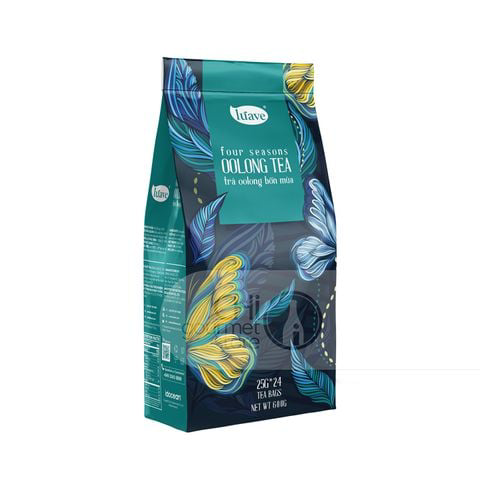
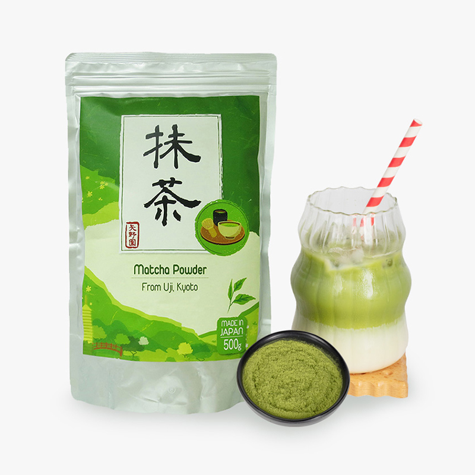
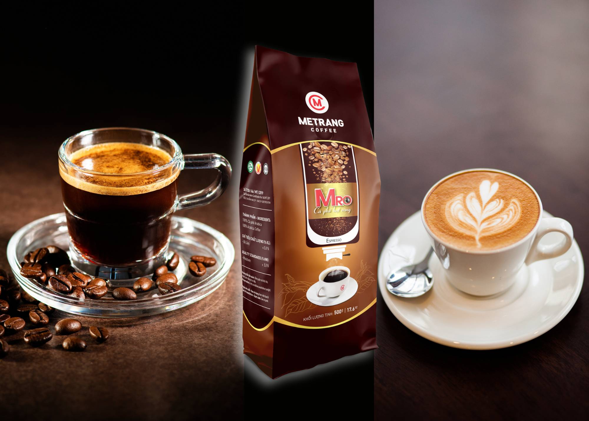

Chào mừng đến với Mooti Tea

Trà Ô Long
Hay được gọi Trà Wulong, hoặc Oolong, loại trà này có nguồn gốc từ Trung Quốc và Đài Loan. Tên gọi “Olong” cũng đến từ tiếng Trung “wulong” (烏龍）, nghĩa là “rồng đen”. Nó thể hiện sự tôn vinh cho hình dáng lá trà sau khi chế biến, giống như hình dáng của một con rồng đen cuộn mình.

Bột Matcha
Matcha Nhật Bản là một loại bột trà xanh mịn, được làm từ lá trà Tencha sau khi được che nắng và chế biến theo phương pháp truyền thống. Quá trình này làm tăng hàm lượng diệp lục và L-Theanine, tạo ra màu xanh đậm đặc trưng, hương vị umami và mang lại cảm giác thư thái, tỉnh táo.
"Anh yêu em như cách matcha gặp kem, vừa nồng nàn vừa dịu êm.""

Bột Caffee
Cà phê là một loại thức uống được rất nhiều người ưa chuộng trong cuộc sống hiện đại, được ủ từ hạt cà phê rang, tách lấy từ quả của cây cà phê. Trải qua thời gian dài phát triển, hiện nay có rất nhiều hình thức pha chế cà phê hấp dẫn, có thể kể đến như cà phê Espresso, cà phê bình, latte,… Thức uống này bạn có thể uống nóng hoặc uống lạnh đều mang lại hương vị cực ngon.
"Trong màu đen của cà phê tinh ý sẽ thấy được nét sóng sánh của màu nâu đỏ, sau vị đắng ngấm lòng là dư vị ngòn ngọt lạ kỳ của vị hương."